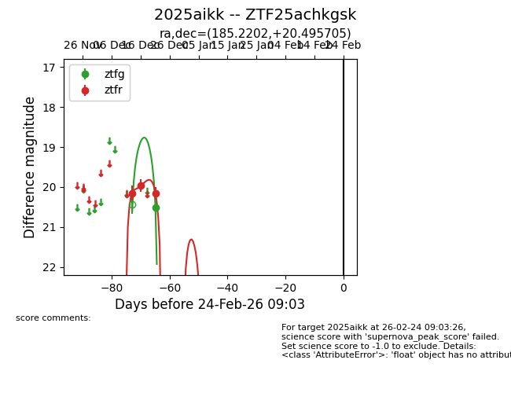
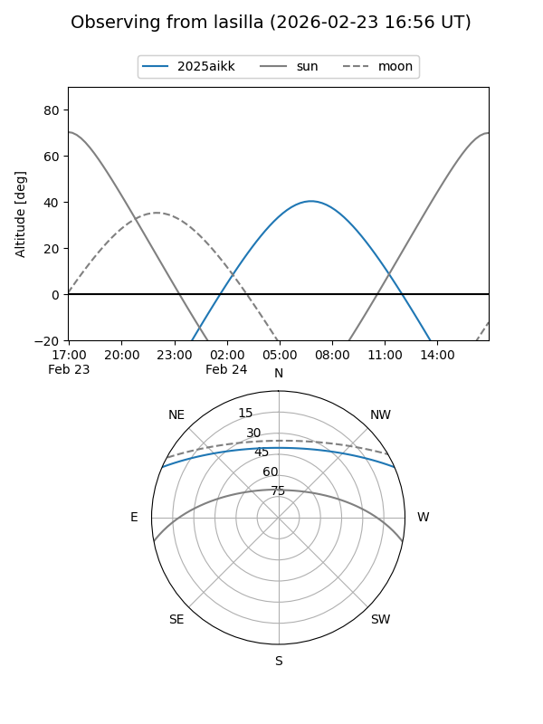
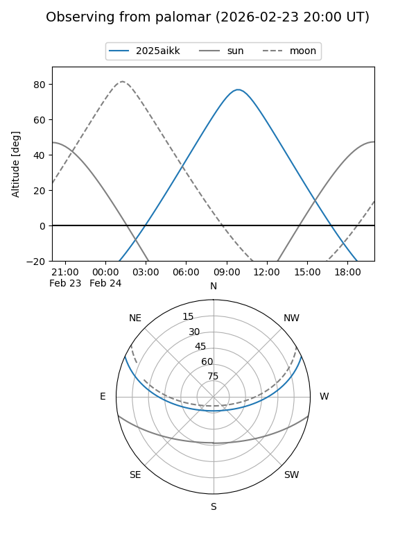
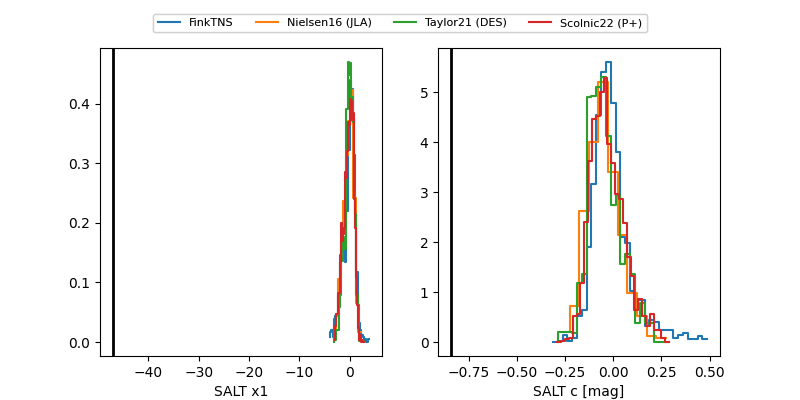

2025aikk
Target 2025aikk at 2025-12-27 16:14
Aliases and brokers:
FINK: fink-portal.org/ZTF25achkgsk
Lasair: lasair-ztf.lsst.ac.uk/objects/ZTF25achkgsk
ALeRCE: alerce.online/object/ZTF25achkgsk
TNS: wis-tns.org/object/2025aikk
YSE: ziggy.ucolick.org/yse/transient_detail/2025aikk
alt names
ZTF25achkgsk (ztf,fink_ztf)
2025aikk (tns,yse)
Coordinates:
equatorial (ra, dec) = 185.2202,+20.49571
equatorial (HMS+DMS) = 12:20:52.86,+20:29:44.54
galactic (l, b) = (254.8281,+80.36995)
Flags:
likely cv
Photometry:
last ztfg=20.50, ztfr=20.17
1 ztfg, 3 ztfr detections
Lightcurve

Visibility


Additional plots
